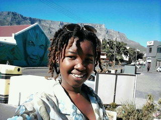
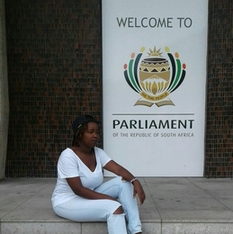

Siyasanga Blayi
Which city

Amsterdam is famous for its canals, has plenty of good international restaurants.There are a couple of main squares in Amsterdam, which are all packed with cafes, restaurants and bars, but is the biggest and most iconic.It’s definitely one of the more lively parts of the city, packed with people. By night, all the restaurants and bars around this area are busy, and sitting outside is a great way to people-watch and experience the Amsterdam nightlife.
A foreign language
| English phrase | foreign language |
|---|---|
| I can't speak your language | la 'astatie 'an 'atakalam lghtak |
| I am from South Africa | 'ana min janub 'afriqia |
| I would like to be your friend | awadu 'an 'akun sadiqak |
Historical places
Parliament
making laws that will improve our lives; discussing and debating government policy and other political issues; consulting with you, the people, and representing your views in Parliament; helping people in their constituencies; approving the budgets of government departments, as presented to Parliament by the Minister of Finance; making sure that the work that government promised to do is being done; and checking that public money is being spent wisely.
District six
.jpg)
District Six was a multi working-class area just off the centre of Cape Town, to the south of the Castle. Today it is an almost vacant lot, shown on maps as the suburb of Zonnebloem. Before being torn apart by the apartheid regime during the sixties and seventies, District Six, was an impoverished but lively community of 55 000, predominantly coloured people.
St George Cathedral

Known as the “People’s Cathedral” for its role in the resistance against apartheid, St. George’s Cathedral is the oldest cathedral in Southern Africa and the mother church of the Anglican Diocese of Cape Town